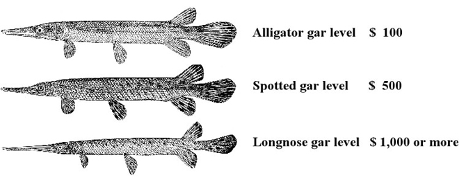

Royal D. Suttkus Fish Collection Library Fund
The Museum has established a special fund to build an
ichthyology library in connection with the
Royal D. Suttkus Fish
Collection. We have established three contribution levels based on Dr.
Suttkus’
beloved gar fishes.

Please make your tax deductible donations payable to
Tulane University and send them to
Royal D.Suttkus Library Fund, Tulane
Museum of Natural History, Belle Chasse LA
70037.
Thank you for your generous donations.
Contributors:
|
Paul and Sue Wagner Total: $4,010 Goal: $100,000
|
Aligator Gar Level Longnose Gar Level Aligator Gar Level Aligator Gar Level Thanks Aligator Gar Level Thanks Thanks Spotted Gar Level Aligator Gar Level Thanks Longnose Gar Level Aligator Gar Level Thanks Spotted Gar Level |
|